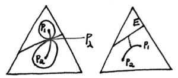
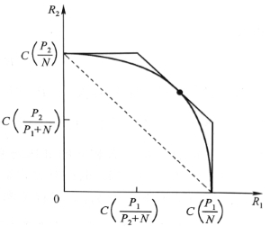
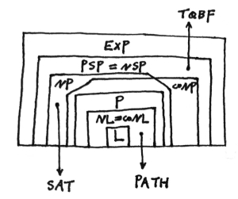

Information and Computation Theory for Interdiscipliners#
This note compiles two well-known textbooks: Michael Sipser, Introduction to the Theory of Computation (3e) and Thomas M. Cover & Joy A. Thomas, Elements of Information Theory (2e). No preknowledge is required and knowing a bit of discrete math is better.
Contents#
1 Entropy
2 Coding, Statistics and Investment
3 Communication
4 Automaton and Language
5 Computability
6 Complexity
1 Entropy#
1.1
entropy \(H(X) = - \sum\limits_{x\in \mathcal{X}} p(x)logp(x) = -Elogp(X)\)
joint entropy, conditional entropy \(H(X,Y)=H(X)+H(Y|X)\) note: usually \(H(X|Y) \neq H(X|Y=y)\)
relative entropy(KL distance) \(D(p\|q)=- \sum\limits_{x\in \mathcal{X}} p(x)log\frac{p(x)}{q(x)} = -Elog\frac{p(X)}{q(X)}\) usually \(D(p\|q) \neq D(q\|p)\)
mutual inforamtion \(I(X;Y)=D(p(x,y)\|p(x)p(y))\)
\(I(X;Y)=H(X)+H(Y)-H(X,Y)=H(X)-H(X|Y)\) \(I(X;X)=H(X)\) Venn diagram
chain rule \(H(X_1,\cdots,X_n)=\sum\limits_{i=1}^nH(X_i|X_{i-1},\cdots,X_1),\ I(X_1,\cdots,X_n;Y)=\sum\limits_{i=1}^nI(X_i;Y|X_{i-1},\cdots,X_1)\)
Jesen Ineq: \(\text{convex func. }f\text{ and a RV }X,\ Ef(X)\geq f(EX)\)
Info. Ineq: \(D(p\|q)\geq 0,\text{ eq. iff }p=q\) \(I(X;Y)\geq 0, \text{ eq. iff }X\ id.\ Y\)
\(H(X)\leq log|\mathcal{X}|\) \(H(X_1,\cdots,X_n)\leq \sum\limits_{i=1}^nH(X_i)\)
log_sum Ineq: \(\sum_{i=1}^n a_i \log \frac{a_i}{b_i} \geq\left(\sum_{i=1}^n a_i\right) \log \frac{\sum_{i=1}^n a_i}{\sum_{i=1}^n b_i}\) \(D(p\|q)\) is convex about \((p,q)\) and \(H(p)\) is concave about \(p\).
Markov chain \(X\rightarrow Y\rightarrow Z,\ I(X;Z|Y)=0\) Data Processing Ineq: \(I(X;Y)\geq I(X;Z),\text{ eq. iff }I(X;Y|Z)=0\)
\(\theta \rightarrow X \rightarrow T(X)\) sufficient statistics \(I(\theta ;X)=I(\theta ;T(X))\) or \(X\ id.\ \theta\text{ when }T(X)\text{ is given}\) minimal suf. stat. \(\theta \rightarrow T(X) \rightarrow U(X) \rightarrow X\)
Fano Ineq: \(X\rightarrow Y \rightarrow \hat{X},\ P_e=Pr(X\neq \hat{X}),\ H_e = -P_elogP_e -(1-P_e)log(1-P_e),\\ H(X|Y)\leq H(X|\hat{X})\leq H_e + P_eH(X)\leq H_e + P_elog|\mathcal{X}|\)
\(X \sim p(x),\ Y \sim q(y),\ Pr(X=Y)\geq 2^{-H(p)-D(p\|q)}\)
1.2
(weak)LLN, asymptotic equipartition property AEP: \(X_1,\cdots,X_n \overset{iid.}{\sim}p(x),\ -\frac{1}{n}logp(X_1,\cdots,X_n) \overset{p}{\rightarrow} H(X)\)
typical set \(A^n_\epsilon \subset \mathcal{X}^n\) \(\text{large }n,\ Pr(A^n_\epsilon) > 1-\epsilon,\ (1-\epsilon)2^{n(H(X)-\epsilon)} \leq |A^n_\epsilon| \leq 2^{n(H(X)+\epsilon)}\) (In short, \(A^n_\epsilon\) has roughly \(2^{nH}\) elements with equal prob. \(2^{-nH}\).)
Nearly \(nH\) bits can express sequence \(X^n\).(typical set \(n(H+\epsilon)+1\) bit and nontypical \(nlog|\mathcal{X}|+1\) bit)
In the sense of first-order exponent, among all sets that have \(Pr>1-\epsilon\)，\(A^n_\epsilon\) is the minimal.
stationary stochastic process, stationary Markov chain
entropy rate of a sto. \(\{X_i\}\): \(H(\mathcal{X}) = \lim\limits_{n\rightarrow \infty}\frac{1}{n}H(X_1,\cdots,X_n)\)(if limit exists)
for stn. sto. \(\text{also } = \lim\limits_{n\rightarrow \infty}H(X_n|X_{n-1},\cdots,X_1)\) proof: Stolz-Cesaro Means Th.
for stn. MC of trans. mx \(P\) and stn. dis. \(\mu = P\mu\), \(H(\mathcal{X}) = H(X_2|X_1) = -\sum\limits_{ij}\mu_iP_{ij}logP_{ij}\)
Second law of thermodynamics: as time \(n\uparrow\), \(D(\mu_n\|\mu'_n)\downarrow,\text{ esp. }D(\mu_n\|\mu);\\ \text{if stn. dis. is uni.(equal a priori prob. principle) } H(X_n)\uparrow;\\ \text{for stn. MC }H(X_n|X_1)\uparrow;\\ \text{operator(e.g. shuffling) }T\ id.\ X,\ H(TX)\geq H(X)\)
\(\text{stn. MC }\{X_n\},\ Y_i = \phi(X_i),\ H(\mathcal{Y})=\lim\limits_{n\rightarrow \infty}H(Y_n|Y_{n-1},\cdots,Y_1)=\lim\limits_{n\rightarrow \infty}H(Y_n|Y_{n-1},\cdots,Y_1,X_1)\)
Shannon-McMillan-Breiman(general AEP) Th: \(H\) is the entropy rate of a finite ergodic sto. \({X_n}\), \(-\frac{1}{n}logp(X_0,\cdots,X_{n-1}) \overset{a.s.}{\rightarrow} H\) proof: Sandwich Th.
1.3
differential entropy \(h(X)= -\int_Sf(x)logf(x)dx\) (\(S\) is the support set of RV \(X\))
joint diff. ent., conditional diff. ent., relative ent., MI, AEP are in the same way.
example: \(h(\mathcal{N}(\mu,\Sigma))=\frac{n}{2}+\frac{1}{2}log(2\pi)^n|\Sigma|\); for bivar. \(\mathcal{N}_2\), \(I(X_1;X_2)=-\frac{1}{2}log(1-\rho^2)\)
\(h(aX)=h(X)+log|a|,\ h(AX)=h(X)+log|detA|\)
Among all dis. with \(\Sigma=EXX'\), Gauss dis. has max ent. \(h(X)\le \frac{1}{2}log(2\pi e)^n|\Sigma|\) proof: \(D(f\|N)\geq 0,\ \int flogN = \int NlogN\)
estimation error (if have side info. \(Y\)) \(E(X-\hat{X})^2\geq \frac{1}{2\pi e}e^{2h(X|Y)}\)
Similarly, \(A^n_\epsilon = \{x\in S^n:-\frac{1}{n}logp(x)-h(X)|\leq \epsilon\}\). While in discrete case we use cardinal \(|A^n_\epsilon| \overset{\cdot}{=} 2^{nH}\), in continuous case we use volume \(V(A^n_\epsilon)\overset{\cdot}{=} 2^{nh}\) (like a cube with side length \(2^h\)).
relation with discrete ent: dis. \(p(x)\) is Riemann integrable, \(X\) is partitioned as \(X^\Delta\) by intervals with length \(\Delta\), then \(\lim\limits_{\Delta \rightarrow 0} H(X^\Delta)+log\Delta = h(X)\). Thus a \(n\) bit quantized cont. RV \(X\) has a ent. of \(h(X)+n\).
more: several ineq. about det can be derived thru ent. of a multivar ndis. e.g. Hadamard ineq: \(\prod\limits_i \Sigma_{ii} \geq |\Sigma|\geq \prod\limits_i \sigma^2_i\) where \(\sigma^2_i\) is the cond. variance of \(X_i\) given other \(X_j\), or \(\sigma^2_n = \frac{|\Sigma_n|}{|\Sigma_{n-1}|}\)
1.4
Maximun entropy dis./prin./estimation \(\max\limits_f h(f)\text{ s.t. }f(x)\geq 0,\ \int_Sf(x)dx = 1,\ \int_S f(x)r_i(x)dx = \alpha_i\)
\(f^*(x)=e^{\lambda_0+\sum\limits_i \lambda_i r_i(x)}=\frac{e^{\sum\limits_i\lambda r_i(x)}}{\int_S e^{\sum\limits_i\lambda r_i(x)}dx}\) proof: Lagrange; Info ineq.
example: Boltzmann dis. \(S=[0,+\infty),\ EX=\mu,\ f(x)=\frac{1}{\mu}e^{-\frac{x}{\mu}}\)
\(S=(-\infty,+\infty),\ EX=\alpha_1,\ EX^2=\alpha_2,\ f(x)=\mathcal{N}(\alpha_1,\alpha_2-\alpha_1^2)\) but when we have third moment constraint, \(\lambda_3\) needs to be \(0\) to aviod \(\int^{+\infty}_{-\infty}f=\infty\), and therefore this method may be out of work. However we can add some carefully devised perturbation onto the original \(\mathcal{N}\) to get whatever \(\alpha_3\) while holding \(\alpha_1\) and \(\alpha_2\). Thus \(\sup h(f)=h(\mathcal{N}(\alpha_1,\alpha_2-\alpha_1^2))=\frac{1}{2}\ln2\pi e(\alpha_2-\alpha_1^2)\), the max ent. is only \(\epsilon\)-reachable.
diff. ent. rate \(h(\mathcal{X})=\lim\limits_{n\rightarrow \infty}\frac{1}{n}h(X_1,\cdots,X_n) \overset{stn.}{=} \lim\limits_{n\rightarrow \infty} h(X_n|X^{n-1})\)
for Gauss stno. \(h(\mathcal{X})=\frac{1}{2}log2\pi e+\frac{1}{4\pi}\int^\pi_{-\pi}logS(\lambda)d\lambda\), \(\sigma^2_\infty = \frac{1}{2\pi e}2^{2h}\)(best em. error given inf. history)
AR model, autocorrelation func. \(R(k)=EX_iX_{i+k}\) power spectral density PSD \(S(\lambda) = \mathcal{F}(R(k))\)
Burg Th: \(p\text{ order Gaussian-Markov autoreg. sto.}\\X_i=\sum_{j=1}^p a_j X_{i-j}+Z_i,\ Z_i\overset{iid.}{\sim}\mathcal{N}(0,\sigma^2)\\\text{attains the max ent. rate among all sto. satisfying the conditions}\\ E X_i X_{i+k}=\alpha_k, 1 \leq k \leq p,\forall i\)
\(a_i,\sigma^2\) can be solved from Yule-Walker equations: \(R(m)=\sum\limits_{k=1}^p a_k R(m-k)+\sigma^2 \delta_{m, 0},1 \leq m \leq p\)
2 Coding, Statistics and Investment#
2.1
source coding \(C: \mathcal{X}\rightarrow \mathcal{D}^*,\ l(x)=|C(x)|,\ L(C)=El(X)\) (alphabet \(\mathcal{D}=\{1,\dots,D-1\}\))
nonsigular \(\supset\) uniquely decodable \(\supset\) instantaneous/prefix
Kraft ineq: for inst. code on D, code word length \(l_1,\dots\), \(\sum\limits_i D^{-l_i}\leq 1\) proof: all code words' son sets disjoint.
optimal code \(H_D(X)\le L< H_D(X)+1,\text{ eq. iff. }D^{-l_i}=p_i\) D-adic dis. proof: Shannon coding by Lagrange
Shannon coding: \(l_i=\lceil log_D \frac{1}{p_i}\rceil\) (to prove the upper bound)
for stno. \(\{X_n\}\), \(L\rightarrow H(\mathcal{X})\) Shannon First Th (Noiseless Coding Th): \(H(\mathcal{X})\le L\le H(\mathcal{X})+\frac{1}{n}\)
for wrong code(using \(q(x)\)), the length will increased by \(D(p\|q)\)
Acc. all uni. decodable codes satisfy Kraft ineq.(McMillian ineq.) so they are no better than prefix codes.
Huffman coding \(C_{H}\) is optimal. Shannon-Fano-Elias coding
Shannon coding is competitive optimal \(Pr(l(X)\ge l'(X)+c)\le \frac{1}{2^{c-1}}\)
(refer to 5.5 for Kolmogorov complexity)
2.2
prob. simplex \(\mathcal{P}\) type \(P_x\) on \(\mathcal{X}\), type class \(T(P)=\{x\in \mathcal{X}^n:P_x=P\},\ P\in \mathcal{P}^n\)
\(1.\ |\mathcal{P}^n|\le (n+1)^{|\mathcal{X}^|}\quad 2.\ Q^n(x)=2^{-n(D(P_x\|Q)+H(P_x))}\quad 3.\ |T(P)|\overset{\cdot}{=} 2^{nH(P)}\quad 4.\ Q^n(T(P))\overset{\cdot}{=} 2^{-nD(P\|Q)}\)
(\(x=\{x_1,\dots,x_n\},\ X_i \overset{iid.}{\sim}Q(x)\))
seq. typical set \(T_\epsilon^{Q^n}=\{x:D(P_x\|Q)\le \epsilon\},\ Pr(T_\epsilon^{Q^n})\rightarrow 1,\ D(P_x\|Q)\overset{a.s.}{\rightarrow}0\)
Large deviation theory Sanov Th: \(\text{subset }E\subset \mathcal{P},\ Q^n(E)\le (n+1)^{|\mathcal{X}|}2^{-nD^*},\ D^*=\min\limits_{P\in E}D(P\|Q);\\ \text{if }E\text{ is the closure of its interior, }-\frac{1}{n}logQ^n(E) \rightarrow D^*\)
if constraints \(E=\{P:\sum\limits_xP(x)g_i(x)\ge \alpha_i\}\), we can get \(P^*(x)=\frac{Q(x)e^{\sum\limits_i\lambda g_i(x)}}{\sum\limits_{x\in \mathcal{X}}Q(x)e^{\sum\limits_i\lambda g_i(x)}}\) using Lagrange.
jointly typical set \(A^n_\epsilon = \{(x^n,y^n)\in \mathcal{X}^n\times \mathcal{Y}^n: \left|-\frac{1}{n} \log p\left(x^n\right)-H(X)\right|<\epsilon,\ \left|-\frac{1}{n} \log p\left(y^n\right)-H(Y)\right|<\epsilon,\\ \left|-\frac{1}{n} \log p\left(x^n, y^n\right)-H(X, Y)\right|<\epsilon\},\ Pr(A^n_\epsilon)\rightarrow 1\)
\((\tilde{X}^n,\tilde{Y}^n)\sim p(x^n)p(y^n),\ Pr((\tilde{X}^n,\tilde{Y}^n)\in A^n_\epsilon)\rightarrow2^{-nI(X;Y)}\) proof: Sanov Th.
\(\text{closed convex set }E \subset \mathcal{P},\ Q\notin E,\ P^* = \arg\min\limits_{P\in E}D(P\|Q),\ \forall P\in E,\ D(P\|Q)\ge D(P\|P^*)+D(P^*\|Q)\)
Conditional Limit Th: \(\text{seq. }X^n\overset{iid.}{\sim}Q,\ n\rightarrow \infty,\ Pr(X_i=x|P_{X^n}\in E)\overset{p}{\rightarrow}P^*(x)\) (i.e. type \(P^*\) represents the whole set) proof: \(D(P_1\|P_2)\ge \frac{1}{2\ln2}\|P_1-P_2\|^2_1\), D's convergence implies \(\mathcal{L_1}\) norm's convergence. (Taylor: \(D(P_1\|P_2)= \frac{1}{2}\chi^2_{P_1,P_2}+\ldots\))
Hypo test \(X_i \overset{iid.}{\sim}Q(x),\ H_1:Q=P_1,\ H_2:Q=P_2\), Neyman-Pearson Lem: likelihood ratio \(T\ge 0\), acceptance region \(A_n(T)=\{x^n:\frac{P_1(x^n)}{P_2(x^n)}>T\},\ \alpha^*=P^n_1(A^c_n(T)),\ \beta^*=P^n_2(A_n(T)),\\ \text{ other regions with }\alpha\le \alpha^*\text{ must have }\beta\ge \beta^*\)
\(\frac{P_1(X^n)}{P_2(X^n)}>T\) equals to \(D(P_{X^n}\|P_2)-D(P_{X^n}\|P_1)>\frac{1}{n}logT\), under this constraint we minimize \(D(P\|P_2)\)(also \(D(P\|P_1)\)) using Lagrange and get \(P_\lambda = \frac{P^\lambda_1(x)P^{1-\lambda}_2(x)}{\sum\limits_{x\in \mathcal{X}} P^\lambda_1(x)P^{1-\lambda}_2(x)}\) to estimate \(\alpha_n \overset{\cdot}{=}2^{-nD(P_\lambda\|P_1)}\), \(\beta_n \overset{\cdot}{=}2^{-nD(P_\lambda\|P_2)}\). (\(\lambda\) can be determined by \(D(P_{X^n}\|P_2)-D(P_{X^n\|P_1})=\frac{1}{n}logT\).)

relative ent. AEP: \(X_1,\cdots,X_n \overset{iid.}{\sim}P_1(x),\ \forall P_2(x),\ -\frac{1}{n}log\frac{P_1(X_1,\cdots,X_n)}{P_2(X_1,\cdots,X_n)} \overset{p}{\rightarrow} D(P_1\|P_2)\)
relative ent. typical set \(P_1(A^n_\epsilon(P_1\|P_2))>1-\epsilon,\ P_2(A^n_\epsilon(P_1\|P_2))\rightarrow 2^{-nD(P_1\|P_2)}\)
Chernoff-Stein Lem: \(\alpha_n=P^n_1(A^c_n),\ \beta_n=P^n_2(A_n),\ \beta^\epsilon_n =\min\limits_{A_n\subset \mathcal{X},\alpha_n<\epsilon}\beta_n,\ \lim\limits_{n\rightarrow \infty}\frac{1}{n}log\beta^\epsilon_n=-D(P_1\|P_2)\)
when Bayesian weighted \(D^*=\min\limits_{A_n} \lim\limits_{n\rightarrow \infty}-\frac{1}{n}log(\pi_1\alpha_n+\pi_2\beta_n)\), Chernoff Info. \(C(P_1,P_2)=D^*=D(P_\lambda\|P_1)=D(P_\lambda\|P_2)\) or \(C(P_1,P_2)=-\min\limits_{0\le\lambda\le 1} log(\sum\limits_xP^\lambda_1(x)P^{1-\lambda}_2(x))\)
(note: \(D^*\) is not related to \(\pi_1,\pi_2\) since large sample will eliminate a priori knowledge \(\frac{\pi_1}{\pi_2}\frac{P_1(X_n)}{P_2(X_n)}\overset{?}{\sim}T\))
Score func. \(V=\frac{\partial}{\partial\theta}\ln f(X;\theta),\ EV=0\) Fisher Info. \(J(\theta)=EV^2=-E\frac{\partial^2}{\partial\theta^2}\ln f(X;\theta)\) \(J_n(\theta)=nJ(\theta)\)
Cramer-Rao Ineq: \(\text{unbiased stat. }T(X)\text{ of }\theta,\ \Sigma(T)\ge J^{-1}(\theta)\) (for multivar. it means mx \(\Sigma-J^{-1}\) is semipositive.)(Similarly, for biased stat. we have \(b_T(\theta)=ET-\theta,\ E(T-\theta)^2\ge \frac{(1+b'_T(\theta))^2}{J(\theta)}+b^2_T(\theta)\).)
proof: Cauchy-Schwarz Ineq. for \(V-EV\) and \(T-ET\).
some senses: for para. dis. family \(\{p_\theta(x)\}\), \(\theta\rightarrow \theta',\ D(p_\theta\|p_\theta')\sim \frac{J(\theta)}{2}\); de Brujin Ineq. \(Z\ id.\ X,\ Z\sim \mathcal{N}(0,1),\ \frac{\partial}{\partial t}h(X+\sqrt{t}Z)=\frac{1}{2}J(X+\sqrt{t}Z),\text{ if limit exists, }\frac{\partial}{\partial t}h(X+\sqrt{t}Z)\big|_{t=0}=\frac{1}{2}J(X)\) (\(h\)'s base is \(e\)); Just like ent. power \(2^{nH(X)}\) can be seemed as the volume of typical set, Fisher info. \(J(X)\) can be seemed as the surface area, where \(J(X)=\int \frac{(\frac{\partial f}{\partial x})^2}{f}dx\); Fisher info's convolution ineq. \(\frac{1}{J(X+Y)}\ge \frac{1}{J(X)}+\frac{1}{J(Y)}\)
ent. powe,r Ineq: \(X\ id.\ Y,\ \dim X=\dim Y=n,\ 2^{\frac{2}{n}h(X+Y)}\ge 2^{\frac{2}{n}h(X)}+2^{\frac{2}{n}h(Y)}\) or \(h(X+Y)\ge h(X'+Y')\), where \(X',Y'\sim \mathcal{N},\ X'\ id.\ Y',\ h(X')=h(X),\ h(Y')=h(Y)\)
2.3
Kelly game \(b^*=p\) Gambling conservation Th: \(W^*+H=logm\) (for uniform fair oppo. game)
estimation of entropy of English (Shannon letter guessing game)
potfolio \(\mathcal{B}=\{b\in \mathcal{R}^m:b_i\ge 0, \sum\limits_{i=1}^m b_i =1\}\) \(X\sim F(x),\ S=b'X\)
first and second moment method: Sharpe-Markowitz theory, CAPM
growth rate \(W(b,F)=\int logS dF = Elogb'X\) \(S_n = \prod\limits_{i=1}^n S_i,\ \frac{1}{n}logS_n \overset{a.s.}{\rightarrow}W,\ S_n\overset{\cdot}{=} 2^{nW}\)
log optimal porfolio \(W^*(F)=\max\limits_b W(b,F)\)
\(W(b,F)\) is concave about \(b\), linear about \(F\), and \(W^*(F)\) is convex about \(F\).
\(b^*\)'s KT condition: \(E(\frac{b'X}{{b^{*}}'X})\le 1,\ E(\frac{X_i}{{b^*}'X})=1\text{ if }b^*_i>0,\le 1\text{ if }b^*_i=0\)
causal portfolio \(b_i:\mathcal{R}_+^{m(i-1)}\rightarrow \mathcal{B}\) log optimal is the best. \(ElogS^*_n = nW^*\ge ElogS_n\)
Side info. raises growth rate. \(\Delta W=\int_y f(y) \Delta W_{Y=y}\le I(X;Y)\)
\(W^*_{\infty}=\lim\limits_{n\rightarrow \infty}\frac{1}{n}W^*(X_1,\cdots,X_n) \overset{stn.}{=} \lim\limits_{n\rightarrow \infty} W^*(X_n|X^{n-1})\)
\(\frac{S_n}{S^*_n}\text{ is a supermartingale, }\overset{a.s.}{\rightarrow}V,\ EV\le 1,\ Pr(\sup\limits_n\frac{S_n}{S^*_n}\ge t)\le \frac{1}{t}\)
universal portfolio: \(S^*_n(x^n)=\max\limits_b \prod\limits_{i=1}^nb'x_i,\ \hat{S_n}(x^n)=\prod\limits_{i=1}^n\hat{b}'_i(x^{i-1})x_i,\ \max\limits_{\hat{b}}\min\limits_{x^n}\frac{S_n(x^n)}{S^*_n(x^n)}=V_n,\\ V_n=(\sum\limits_{n_1+\dots+n_m=n}\binom{n}{n_1,\dots,n_m}2^{-nH(\frac{n_1}{n},\dots,\frac{n_m}{n})})^{-1}\sim n^{-\frac{m-1}{2}}\)
\(\hat{b}_{n+1}(x^i)=\frac{\int_\mathcal{B}bS_i(b,x^i)d\mu(b)}{\int_\mathcal{B}S_i(b,x^i)d\mu(b)},\ \hat{S}_n(x^n)=\int_\mathcal{B}S_n(b,x^n)d\mu(b)\)
3 Communication#
3.1
discrete channel \((\mathcal{X},p(y|x),\mathcal{Y})\) DMC n-th extension \(p(y_k|x^k,y^{k-1})=p(y_k|x_k)\), non-feedback \(p(x_k|x^{k-1},y^{k-1})=p(x_k|x^{k-1})\), thus \(p(y^n|x^n)=\prod\limits_i p(y_i|x_i)\)
\((M,n)\) code of channel: message index set \(W\in \mathcal{W}=\{1,\dots,M\}\), coding func. \(X^n:\mathcal{W}\rightarrow \mathcal{X}^n\) and codebook \(\mathcal{C}=\{x^n(1),\dots,x^n(M)\}\), decoding func. \(g:\mathcal{Y}\rightarrow \mathcal{W}\)
\(W\rightarrow X^n(W) \rightarrow Y^n \rightarrow \hat{W}\)
conditional, maximum, average prob. of error \(\lambda_i = \sum\limits_{y^n}p(y^n|x^n(i))I(g(y^n)\neq i),\ \lambda=\max\limits_i \lambda_i,\ P^n_e=\bar{\lambda_i}\)
rate \(R=\frac{logM}{n}\) bit/trans. achievable rate \(n\rightarrow\infty,\ \lambda\rightarrow 0\)
channel capacity \(C=\max\limits_{p(x)}I(X;Y)\) \(0\le C=\max\limits_{p(x)} H(Y)-H(Y|X)\le \min (log|\mathcal{X}|,log|\mathcal{Y}|)\)
note: we use max not sup here since \(I(X;Y)\) is a concave func. on convex set of \(p(x)\) and several algo. can compute this maximum.
direct understanding: For each typical seq. \(X^n\) there are roughly \(2^{nH(Y|X)}\) seq. of \(Y^n\) corresponding to it, and the total number of \(Y^n\) (typical) is \(2^{nH(Y)}\), so nearly \(2^{nI(X;Y)}\) disjointed image sets of diff. inputs \(X^n\) can be seperated in one transmission. (or think of jointly typical \(Pr=2^{-nI}\))
example: BSC \(C=1-H(p)\), BEC \(C=1-\alpha\) symmetric channel
Channel Coding Th (Shannon Second Th): \(\text{DMC, }\forall R<C,\ \exist (2^{nR},n)\text{ code, }\lambda\rightarrow 0;\text{ Conversely, }\forall (2^{nR},n)\text{ code with }\lambda\rightarrow 0\text{ must has }R\le C\)
proof: randomly generated codebook, jointly typical decoding, so error comes from either not jointly typical \(Y^n\) or other possible inputs that are jointly typical with: \(Pr(V^n\neq \hat{V}^n)=Pr((X^n(i),Y^n)\notin A^n_\epsilon)+\)\(\sum\limits_{j\neq i}Pr((X^n(j),Y^n)\in A^n_\epsilon)\); for converse th, Fano ineq. and Data-processing ineq. lead to \(nR=H(W^{uni.})\le 1+P^n_e nR+nC\). (strong converse edition: \(R<C,\ P^n_e \rightarrow 0;\ R>C,\ P^n_e \rightarrow 1\))
note: equality needs 1. coding \(X^n(W)\) and decoding \(\hat{W}\) are sufficient(all diff.); 2. \(Y_i\ id.\); 3. \(X_i\)'s dis. is \(p^*(x)\).
Hamming code, error-detecting code minimum weight and minimun distance parity check mx. \(H(c+e_i)=He_i\) systematic code \((n,k,d)\) \(\text{e.g. Hamming } r(H)=l,\ n=2^l-1,\ k=2^l-l-1,\ d=3\) block code and convolutional code more: BCH code, LDPC code, turbo code.
feedback code \(x_i(W,Y^{i-1})\), feedback capacity \(C_{FB}=C\) (feedback can simplify coding but cannot enlarge capacity of DMC.)
Source-Channel Seperation Th: (\(Pr(V^n\neq \hat{V}^n)=\sum\limits_{v^n}p(v^n)\lambda_{v^n}\))
\(\{V^n\}\text{ satisfies AEP (ergodic stno.)},\ H(\mathcal{V})<C,\ \exist \text{ source-channel code},\ Pr(V^n\neq \hat{V}^n)\rightarrow 0,\text{ vice versa}\)
Thus two-step way is equally efficient. First we do data compressing (from AEP): nearly all prob. is in a seq. set with size \(2^{nH}\), and we can use \(R>H\) code to express this info. source with little error. Second we do data transmitting (from Joint AEP): for large grouping length \(n\), nearly all inputs and outputs are jointly typical with \(2^{-nI}\) prob. of exception, and we can use \(R<\max I=C\) code to keep error prob. low. This Th. \(H<C\) combines the two, telling that we can devise source code(exprssing efficiently) and channel code(confronting noise) seperatedly.
3.2
Gaussian channel \(Y_i = X_i +Z_i,\ Z_i \sim \mathcal{N}(0,N)\) power constraint \(\frac{1}{n}\sum\limits_i x_i^2 \le P\)
\(C=\max\limits_{f(x):EX^2\le P}I(X;Y)=\frac{1}{2}log(1+\frac{P}{N})\) bit/trans.
proof: \(EY^2=P+N,\ I(X;Y)=h(Y)-h(Z),\text{ when }Y\sim \mathcal{N}(0,P+N)\text{ i.e. }X\sim \mathcal{N}(0,P) \text{ max}\)
Similarly, code \((2^{nR},n)\) with \(R<C\) is achievable. (Each decoding ball's radius is \(\sqrt{nN}\) and outputs' \(\sqrt{n(P+N)}\), so the number of disjointed balls is no more than \((\frac{P+N}{N})^{\frac{n}{2}}\).)
finite bandwidth \(W\) Nyquist-Shannon Sampling Th: signal \(f(t)\) with maximum cut-off freq. \(W\) can be completely determined by sampling seq. of \(\frac{1}{2W}\) s time interval. Thus it can be seemed as a vec. in \(2WT\) dof/dim space.
bandwidth \(W\), noise psd \(\frac{N_0}{2}\), noise power \(N_0W\) (spherical ndis. with covarmx \(\frac{N_0}{2}I\)) AWGN channel
\(C=Wlog(1+\frac{P}{N_0W})\) bit/s (Shannon Formula) \(W\rightarrow \infty,\ C=W\cdot SNR=\frac{P}{N_0}\) nat/s
parallel Gaussian channel \(\sum EX^2\le P,\ C=\max I(X^k;Y^k)\) max power allocation: \(P_i=(v-N_i)^+,\ \sum (v-N_i)^+=P\) (water-filling)
correlated noise (memory channel can also convert to this) \(\frac{1}{n}tr(\Sigma_X)\le P,\ C_n=\max \frac{1}{2n}log\frac{|\Sigma_X+\Sigma_Z|}{|\Sigma_Z|}\), also sloved by water filling onto \(\Sigma_Z\)'s eigen values \(\lambda_i\). \(C_n=\frac{1}{2n}\sum\limits_{i=1}^n log(1+\frac{(\lambda-\lambda_i)^+}{\lambda_i}),\ \sum\limits_{i=1}^n(\lambda-\lambda_i)^+=nP\)
more: for stno, covarmx is Toeplitz mx, when \(n\rightarrow \infty\) the envelop of its eigenvalues approaches the power spectral \(N(f)\) of this stno. ; feedback Gaussian channel \(C_{n,FB}=\max\limits_{tr(\Sigma_X)\le nP}\frac{1}{2n}log\frac{|\Sigma_{X+Z}|}{|\Sigma_Z|}\), \(X^n\) is no longer id. with \(Z^n\) and \(X=BZ+V\) miximizes. \(C_{n,FB}\le \min (C_n+\frac{1}{2},2C_n)\) is only slightly higher than \(C_n\).
3.3
reproduction/code point \(\hat{X}(X)\), Dirichlet partition Lloyd algo.
distortion measure \(d(x,\hat{x})\) Hamming distortion, squared error distortion
\((2^{nR},n)\) rate distortion code \((R,D)\) achievable \(\lim\limits_{n\rightarrow \infty}Ed(X^n,g_n(f_n(X^n)))\le D\)
rator. func. \(R(D)=\inf\limits_D \text{achi.}R=\min \limits_{p(\hat{x}|x):D}I(X;\hat{X})\) (Shannon Third Th. \(R\ge R(D_0)\Leftrightarrow D\le D_0\))
example: (Ham. distortion, \(R(D)=0\) at other large \(D\)) \(B(p)\) source: \(R(D)=H(p)-H(D),\ 0\le D\le \min(p,1-p)\); \(\mathcal{N}(0,\sigma^2)\) source: \(R(D)=\frac{1}{2}log\frac{\sigma^2}{D},\ 0\le D\le \sigma^2\) (similarly, ball of radius \(\sqrt{nD}\) filling in ball of radius \(\sqrt{n\sigma^2}\), the number of codewords equals to \(2^{nR(D)}\)); parallel(multindis.) source: \(R(D)=\sum\limits_i\frac{1}{2}log\frac{\sigma^2_i}{D_i},\ D_i=\min (\lambda,\sigma^2_i),\ \sum\limits_i D_i=D\) (i.e. anti-waterfilling on the spectral)
Similarly, for combined source and channel coding, \(D=\frac{1}{n}\sum\limits_{i=1}^n Ed(V_i,\hat{V_i})\) can be achieved iff \(C>R(D)\).
more: rator. is achi. when grouping length \(n\) is enough.(so put them together to describe will have less distortion than considering seperatedly) distortion typical set, strong typical set Blahut-Arimoto algo. for computing rator func.
universal source code: \(\exist (2^{nR},n)\text{ code, }\forall \text{ source }Q\text{ with }H(Q)<R,\ P^n_e \rightarrow 0\)
more: minimax redundancy, Lemple-Ziv(LZ) coding
multiaccess channel, broadcast channel, relay channel, interference channel
multiaccess: example: binary addition and multiplication channel capacity region \(\pmb{R}\in\mathcal{C}\) i.e. convex hull of \(R(S)=\sum\limits_{i\in S} R_i,\ X(S)=\{X_i:\in S\},\ \forall S\subset \{1,\dots,m\},\ R(S)\le I(X(S);Y|X(S^c))\Leftrightarrow P^n_e\rightarrow 0\) onion-peeling at corner points
for Gausssion, denote \(C(x)=\frac{1}{2}log(1+x)\), \(\sum\limits_{i\in S} R_i \le C(\frac{\sum\limits_{i\in S}P_i}{N})\); total code-rate \(C(\frac{mP}{N})\) will approach infty when \(m\rightarrow \infty\) but mean of each sender will approach \(0\). CDMA(the polyline), FDMA and TDMA(the curve)
for source coding, Slepian-Wolf Th: \(\forall S\subset \{1,\dots,m\},\ R(S)> H(X(S)|X(S^c))\Leftrightarrow P^n_e\rightarrow 0\)

digest: Shannon's three theorems. 1. non-distortion/lossless length-variable source-coding: (unidecodable) \(R>H\) (\(L\) is rate \(R\)) 2. noisy channel-coding: \(R<C\) (AWGN \(C=B\log(1+\frac{S}{N})\)) 3. fidelity-criteria/lossy source-coding: \(R>R(D)\)
4 Automaton and Language#
4.1
computation model finite automation FDA
transition function \(\delta:Q\times \Sigma\rightarrow Q\), accept state, languge \(L(M)=A\)
regular language regular operation: union \(\cup\), concatenation \(\circ\), star \(^*\)
nondeterministic \(\epsilon\) NFA \(\delta:Q\times \Sigma_\epsilon \rightarrow \mathcal{P}(Q)\)
\(NFA=DFA\)
\(REG\)'s closure under regular operation
regular expression \(REX\): \(R = a\in \Sigma \text{ or } \epsilon \text{ or } \varnothing \text{ or } R_1\cup R_2 \text{ or } R_1\circ R_2 \text{ or } R_1^*\)
token, lexical analyzer
GNFA (like contraction) \(\delta:(Q-\{q_{acc}\})\times (Q-\{q_{acc}\}) \rightarrow \mathcal{R}\)
equivalence: a language is regular iff it can be expressed by regex. proof: construction in closure; GNFA
irregular lang. example: \(A=\{0^n1^n|n\geq 0\}\)
Pumping Lem: \(\text{lang.} A \in REG,\ \exist p,\ \forall \text{ string }s\text{ with a length of no less than }p, s=xyz \text{ and:}\\1.\forall i\geq 0,\ xy^iz\in A\quad 2.|y|>0\quad 3.|xy|\leq p\)
4.2
parser, context-free grammar, context-free language CFL
parse tree leftmost derivation ambiguous, inherently ambig.
Chomsky normal form: \(A\rightarrow BC\) or \(A\rightarrow a\) (or \(S\rightarrow \epsilon\))
pushdown automaton PDA stack \(\delta:Q\times \Sigma_\epsilon\times \Gamma_\epsilon \rightarrow \mathcal{P}(Q\times \Gamma_\epsilon)\)
equivalence: a language is context-free iff it can be recognized by a PDA. proof: sign symbol \(\$\), nondeter. substitution and comparison; \(A_{pq}\) for string that brings PDA from state \(p\) and empty stack to \(q\) and empty stack \(\rightarrow A_{pr}A_{rq}\) or \(\rightarrow a A_{rs} b\)
\(REG \subset CFL\)
CFL's Pumping Lem: \(\dots s=uvxyz \text{ and:}\\1.\forall i\geq 0,\ uv^ixy^iz\in A\quad 2.|vy|>0\quad 3.|vxy|\leq p\)
more: DPDA, DCFL leftmost reduction, valid string, handle, forced handle, DCFG
more: dotted rule DK-test almost(end sign lang.) equivalence of DCFG and DPDA LR(k) grammar
5 Computability#
5.1
Turing machine, configuration \(L(M)\)
Turing-recognizable, decidable
variants and robustness: multitape TM, nondeterministic TM, enumerator recursive enumerable
algorithm, Hilbert's problem, Church-Turing Thesis
description of TM
5.2
decidable problem(language): \(A,\ E,\ EQ\) for \(DFA(REX),\ CFG\) except \(EQ_{CFG}\)
\(REG \subset CFL \subset DECI \subset RE\)
universal TM \(A_{TM}\) is undecidable. proof: contradiction, Cantor diagonal method
The set of all TM \(\{\langle M\rangle \}\) is countable but the set of all lang. \(\mathcal{L}\) is uncountable, thus \(\exist\ lang. A \notin RE\).
\(A,\ \overline{A} \in RE \Rightarrow A \in DECI\) \(\overline{A_{TM}} \notin RE\)
5.3
reduction undeci: \(HALT_{TM},\ E_{TM},\ REG_{TM},\ EQ_{TM}\) proof: reduct to \(A_{TM}\) etc.
Rice Th: \(P \text{ is a non-trivial property},\ L_p = \{\langle M\rangle | L(M) \in P\} \text{ is undeci.}\) (not all TM descriptions belong to set \(P\) and \(L(M_1)=L(M_2),\ \langle M_2\rangle \in P \text{ iff } \langle M_1\rangle \in P\).)
computation history LBA \(A_{LBA}\) is deci. but \(E_{LBA}\) is undeci.
more: \(ALL_{CFG},\ PCP\)
computable function mapping(many-one) reducibility: \(\exist\text{ computable func. } f:\Sigma^*\rightarrow\Sigma^*,\ \forall \omega,\ \omega\in A \Leftrightarrow f(\omega)\in B\) \(A\leq_m B\)
If \(A\) is undeci/unre then \(B\) is undeci/unre; if \(B\) is deci/re then \(A\) is deci/re.
\(A\leq_m B \Leftrightarrow \overline{A} \leq_m \overline{B}\) example: \(A_{TM} \leq_m \overline{EQ_{TM}}\)
5.4
\(SELF\) machine that obtains its own description
Recursion Th: \(T \text{ is a TM of func. } t: \Sigma^* \times \Sigma^* \rightarrow \Sigma^*,\ \exist\text{ TM R of func. } r:\Sigma^* \rightarrow \Sigma^*,\ \forall \omega ,\ r(\omega) = t(\langle R\rangle, \omega)\)
minimal description of TM \(MIN_{TM}\) fixed point \(\exist F,\ f(\langle F\rangle) = F\)
mathematical logic: model, formula \(\supset\) sentence \(\supset\) theory
\(Th(\mathbb{N},+)\) is deci. proof: NDA recursion \(Th(\mathbb{N},+,\times)\) is undeci.
oracle TM \(T^{A_{TM}}\) is much stronger but there still be some lang. it can not deci.
A decidable relative to B Turing reducible \(A\leq_T B\) example: \(E_{TM} \leq_T A_{TM}\)
5.5
minimal description of string \(d(x)\), descriptive(Kolmogorov) complexity \(K(x) =\min |\langle M,\omega \rangle|\) where \(x\) is on the tape when \(M\) halts on the input \(\omega\) (or \(K(x)=\min\limits_{p:\mathcal{U}(p)=x}l(p)\))
\(K(x)\) is uncomputable. Godel incompleteness theorem, Berry paradox
\(K(xy) \leq K(x)+K(y)+O(logK(x))\) but can not reach \(K(x)+K(y)+O(1)\).
\(\forall \text{ desc. lang. } A ,\ \exist c_A,\ \forall x,\ K(x)\leq K_A(x)+c_A\)
\(|\{x\in \{0,1\}^*:K(x)<k\}|<2^k\) for integer \(n\), \(K(n)\le log^*n+c\)
\(\forall \mathcal{U},\ \sum\limits_{p:\mathcal{U}(p)\text{halts}} 2^{-l(p)}\le 1\) (by Kraft ineq.) \(sto. \{X^n\} \overset{iid.}{\sim} f(x),\ \frac{1}{n} EK(X^n|n)\rightarrow H(X)\) (by source coding th.)
more: c-compressible There always exists incompressible string of any length.(\(\lim\limits_{n\rightarrow \infty}\frac{K(x^n|n)}{n}=1\)) There exists a constant \(b\) for \(\forall x, d(x)\) is incompressible by \(b\).
universal prob. \(P_{\mathcal{U}}(x)=\sum\limits_{p:\mathcal{U}(p)=x} 2^{-l(p)}\) \(\forall \text{ computer } A ,\ \exist c_A,\ \forall x,\ P_{\mathcal{U}}(x)\ge c_A P_{A}(x)\)
equivalence: \(\exist c,\ \forall x,\ |log\frac{1}{P_{\mathcal{U}}(x)}-K(x)|\le c\)
Chaitin \(\Omega=\sum\limits_{p:\mathcal{U}(p)\text{halts}} 2^{-l(p)}\)
more: Kolmogorov structure function, Kol. minimal sufficient statistics
6 Complexity#
6.1
big O notation, small O notation
Unlike compuability, complexity depends on the computing model.
time complexity \(TIME(f(n))\) note: \(TIME(O(nlogn)) \subset REG\)
\(P=\bigcup\limits_k TIME(n^k)\) PATH, REL_PRIME, CFL
verifier, certificate \(NP=\bigcup\limits_k NTIME(n^k)=P\_VERI \subset EXPTIME\) HAM_PATH, COMPOSITES, CLIQUE
\(P\overset{?}{=}NP\) NP-complete SAT
polynomial time computable function, polynomial time reduction \(A\leq_PB\)
more: cnf formula, 3SAT(is NPc)
Cook-Levin Th: SAT is NPc. proof: tableau, window \(\phi_{cell}\wedge\phi_{start}\wedge\phi_{move}\wedge\phi_{accept}\)
6.2
space complexity \(SPACE(f(n))\)
\(SPACE(f(n))\subset TIME(2^{O(f(n))})\subset SPACE(2^{O(f(n))})\)
Savitch Th: \(\forall f: \mathbb{N}\rightarrow\mathbb{R}^+,\ \text{where}\ f(n)\geq n(\text{acc.}\ logn),\ NSPACE(f(n))\subseteq SPACE(f^2(n))\)
\(PSPACE=NPSPACE \supseteq NP\)
PSPACE-complete PSAPCE-hard TQBF, FORMULA_GAME
bitape TM \(L=SPACE(logn)\overset{?}{=}NL\)
log space transducer, log space reduction \(A\leq_LB\)
PATH is NLc, \(NL=coNL\subseteq P\)
6.3
space constructible(\(f(n)\geq O(logn)\)), time constructible(\(f(n)\geq O(nlogn)\))
Hierarchy Th: \(\forall\ \text{constructible}\ f: \mathbb{N}\rightarrow\mathbb{N},\ \exist\ \text{lang.}\ A,\\ \text{decidable in space } O(f(n))\text{ but not } o(f(n));\ \text{in time } O(f(n))\text{ but not } o(f(n)/logn)\)
\(NL \subsetneq PSPACE\), \(PSAPCE \subsetneq EXPSPACE\), \(P\subsetneq EXPTIME\)
more: EXPSPACE-complete circuit complexity
advanced topics: approx. algorithm, probabilistic TM (BPP), prime, alternating TM, IP=PSPACE, parallel RAM (NC), cryptography(private-key cryptosystem, pulic-key cryptosystem RSA)
family picture:
